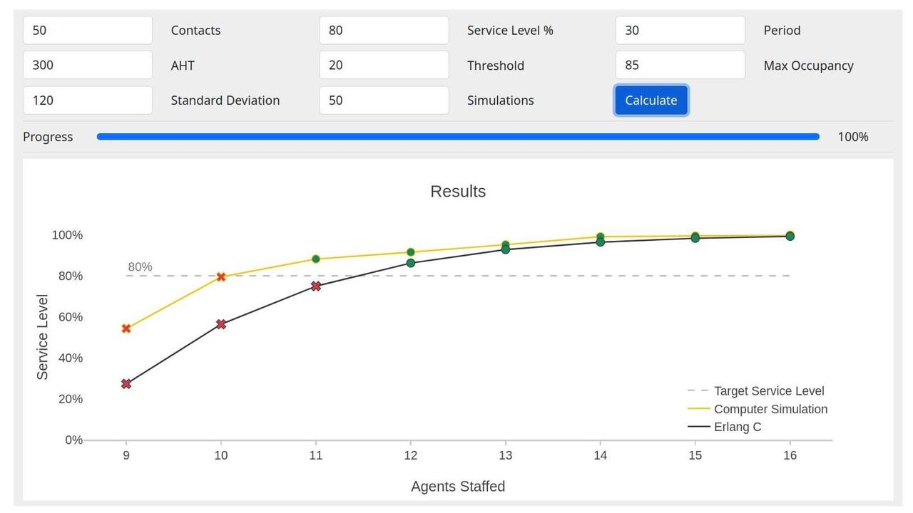

Call Center Calculator
I wrote a web app that visualizes the difference between Erlang C and simulation methodologies for determining contact center staffing requirements. This has been a work in progress for some time, so I'm excited to share!
Check it out here: www.callcentercalculator.com
